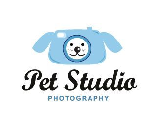

We at Pet Photography Studio are a team of animal lovers with a passion for capturing the true essence of pets in photographs. We believe every furry friend deserves to have their unique personality shine through, and our experience allows us to create heartwarming portraits that become treasured keepsakes.
From playful pups to majestic felines, we have a knack for putting animals at ease during their sessions, ensuring a fun and stress-free experience for both you and your pet. Let us help you create lasting memories of the love and joy your furry companion brings to your life!
